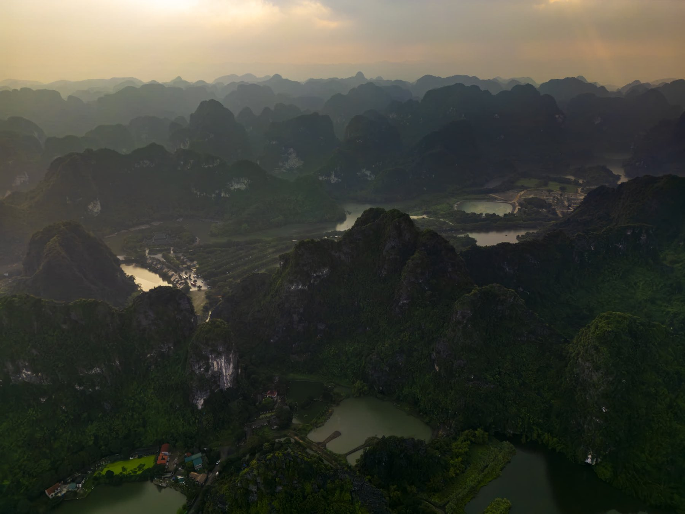
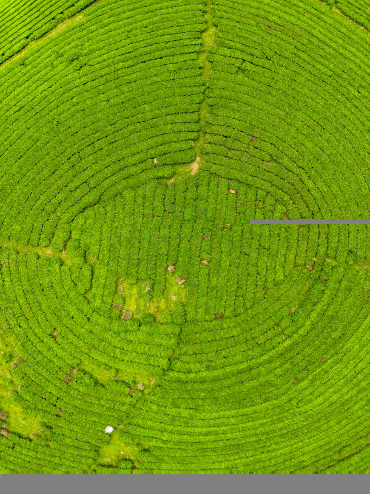
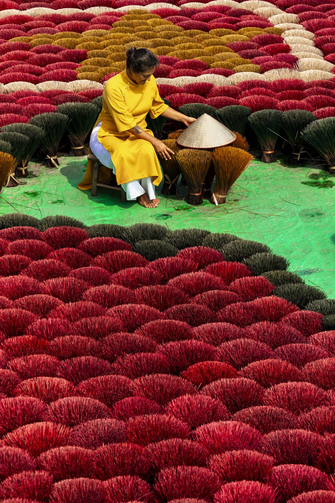

A visual story for your journeys
Photography, aerial perspectives and film of the route: accommodation, transfers, guides, local encounters and the experiences that distinguish your itineraries.

A proposal for 365 Travel
Original photography and film that bring your tailor-made journeys to life for the travel partners who sell them.
Explore the proposal ↘THE OPPORTUNITY
365 Travel designs tailor-made journeys across Southeast Asia. I would love to help you show the character of those journeys through a distinctive library of original photography and film.
We can start with a route or collection you want to promote, then build a visual story around the experiences that make it special.
See how it could work ↗A POSSIBLE STARTING POINT
Choose an itinerary, and we’ll create a visual narrative that helps your partners understand and present the experience.

From sweeping landscapes to the people, places and moments along the way: a visual story that makes a tailor-made journey tangible.
A creative direction to develop together, based on your priorities.
WHAT WE CAN CREATE
Photography, aerial perspectives and film of the route: accommodation, transfers, guides, local encounters and the experiences that distinguish your itineraries.
A cohesive visual library for your website, B2B presentations and itinerary materials, ready for your team and partners to use under agreed licence terms.
Commission new imagery for your own campaign, or work with us to develop a complete visual campaign around a destination or product.


THE PEOPLE BEHIND THE PLACES
I’ve travelled in Vietnam and Thailand and know how much the people on the ground shape a journey. For each project, I’d work alongside your team, local guides and production partners to find the right stories and organise the shoot.
WORKING TOGETHER
01Choose the focusTell us which itinerary, experience or destination you want to bring forward.
02Plan the productionWe shape the creative direction, duration and local logistics together.
03Put the imagery to workYour team receives the agreed final assets and usage rights. Copyright remains with the creator.
LET’S TALK AT FITUR
I’d be glad to hear which journeys you want to promote and explore a visual project tailored to 365 Travel.